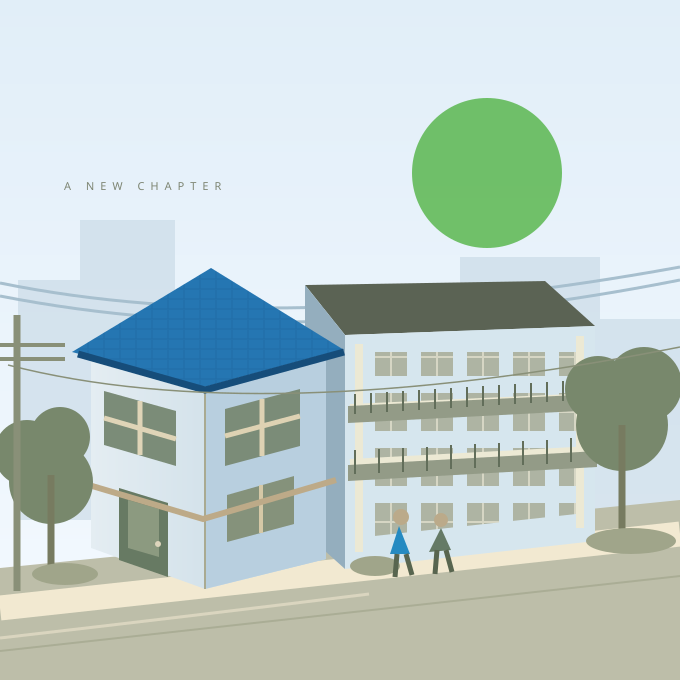

Chọn dịch vụ
Tìm bất động sản hoặc việc làm bạn quan tâm.
Tìm không gian sống phù hợp và cơ hội công việc tiếp theo tại Nhật Bản. ONIKI kết nối những nhu cầu thiết thực, bằng tiếng Việt và tiếng Nhật.
↓Khám phá ONIKI
Tìm hiểu thông tin nhà ở, mặt bằng và các lựa chọn thuê hoặc mua phù hợp với nhu cầu của bạn.
Xem danh sách ↗Khám phá thông tin tuyển dụng, địa điểm làm việc và điều kiện ứng tuyển trước khi trao đổi tư vấn.
Xem danh sách ↗Gửi nhu cầu bằng ngôn ngữ bạn thuận tiện để bắt đầu trao đổi cùng ONIKI.
Liên hệ tư vấn ↗ONIKI sẽ đăng thông tin sau khi kiểm tra nội dung. Bạn có thể gửi nhu cầu để được trao đổi tư vấn.
ONIKI sẽ đăng thông tin sau khi kiểm tra nội dung. Bạn có thể gửi nhu cầu để được trao đổi tư vấn.
Tìm bất động sản hoặc việc làm bạn quan tâm.
Gửi thông tin và nội dung cần tư vấn qua biểu mẫu.
Đội ngũ tiếp nhận và trao đổi bước tiếp theo.
Hãy chia sẻ nhu cầu về nơi ở hoặc công việc tại Nhật Bản với ONIKI.